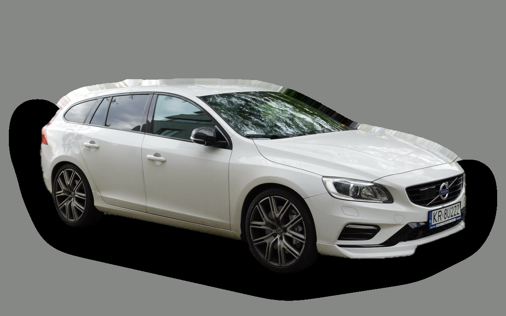

Vad kostar en Volvo V60 I per månad?
En Volvo V60 I från 2015 kostar cirka 3 653 kr i månaden, allt inräknat.
3 653 krper månad, årsmodell 2015
107 000 krpris, årsmodell 2015
322 000 krsenaste nypris
Cprisvärdhetsbetyg (2015)

.jpg){kind=link}
Månadskostnad per årsmodell
| Årsmodell | Version i beräkningen | Pris | Per månad | Betyg |
|---|---|---|---|---|
| 2018 | D4 181, Kinetic | 173 000 kr | 3 899 kr | C |
| 2015 | D4 181, Kinetic | 107 000 kr | 3 653 kr | C |
| 2012 | D4 181, Kinetic | 77 000 kr | 3 398 kr | C |
Räknat på 5 års ägande och 1 250 mil per år, med bränslepriser från 2026-10-22. Månadskostnaden innehåller värdeminskning, drivmedel, service och reparationer, försäkring och fordonsskatt.
Så fördelas kostnaden för en 2015:a
- Värdeminskning: 762 kr/mån
- Drivmedel: 1 536 kr/mån
- Service och reparationer: 982 kr/mån
- Försäkring: 234 kr/mån
- Fordonsskatt: 139 kr/mån
Begagnatpriser i annonser
| Årsmodell | Medianpris | Annonser | Typiskt miltal |
|---|---|---|---|
| 2018 | 175 000 kr | 89 | 14 800 mil |
| 2017 | 134 900 kr | 66 | 18 800 mil |
| 2016 | 109 900 kr | 64 | 22 700 mil |
| 2015 | 109 900 kr | 75 | 22 600 mil |
| 2014 | 94 000 kr | 77 | 22 800 mil |
| 2013 | 87 000 kr | 64 | 22 800 mil |
| 2012 | 75 400 kr | 57 | 24 700 mil |
| 2011 | 69 900 kr | 69 | 24 300 mil |
Medianpriset i svenska annonser per årsmodell i oktober 2026 (källa: Blocket). Annonspriser är utgångspriser, och slutpriset kan bli lägre.
Motorer och versioner
| Motor | Drivmedel | Effekt | 0–100 km/h | Förbrukning (WLTP) | Räckvidd | Årsmodeller | Pristillägg |
|---|---|---|---|---|---|---|---|
| D4 181 | Diesel | 181 hk | 7,9 s | 4,6 l/100 km | – | 2011–2018 | – |
| T4 190 | Bensin | 190 hk | 7,9 s | 6,6 l/100 km | – | 2011–2018 | −36 000 kr |
| D6 AWD laddhybrid 283 | Laddhybrid | 283 hk | 6,1 s | 1,9 l/100 km + 16 kWh/100 km | – | 2013–2018 | +199 000 kr |
- Utrustning: Kinetic, Summum (+17 800 kr)
Fakta
- Kaross
- Kombi
- Årsmodeller
- 2011–2018
- Senaste nypris
- 322 000 kr
- Bagage
- 430 liter
- Euro NCAP
- 5 av 5 stjärnor
- Nybilsgaranti
- 3 år
- Driftsäkerhet
- 3 av 5
- Helförsäkring, uppskattning
- 6 100 kr/år
- Service, uppskattning
- 4 400 kr/år
Vanliga fel att ha koll på
- Insprutare och virvelspjäll (femcylindrig diesel), reparation cirka 7 000 kr
- Kamrem och vattenpump förstörs av oljeläckage, reparation cirka 11 000 kr
- Partikelfilter och EGR (diesel), reparation cirka 9 000 kr
- Oljeförbrukning och kamkedjespännare (Drive-E bensin), reparation cirka 16 000 kr
- Elektrisk bakaxel (laddhybrid), reparation cirka 45 000 kr
Felen gäller vissa motorer och årsmodeller. I kalkylatorn räknas risken för just den version du väljer.
Fördelar och nackdelar
Fördel
Snygg kombi som är billig begagnad och även finns som laddhybrid.
Nackdel
Mindre bagage än en V70.
Liknande bilar
 Mazda6 Kombi3 655 kr/mån som 2019:a
Mazda6 Kombi3 655 kr/mån som 2019:a Peugeot 308 SW3 618 kr/mån som 2023:a
Peugeot 308 SW3 618 kr/mån som 2023:a Opel Astra Sports Tourer3 594 kr/mån som 2023:a
Opel Astra Sports Tourer3 594 kr/mån som 2023:a Volkswagen Golf Sportscombi3 581 kr/mån som 2023:a
Volkswagen Golf Sportscombi3 581 kr/mån som 2023:a Cupra Leon Sportstourer3 757 kr/mån som 2023:a
Cupra Leon Sportstourer3 757 kr/mån som 2023:a Volvo V703 484 kr/mån som 2013:a
Volvo V703 484 kr/mån som 2013:a
Uppdaterad 2026-10-27 · annonsdata okt 2026